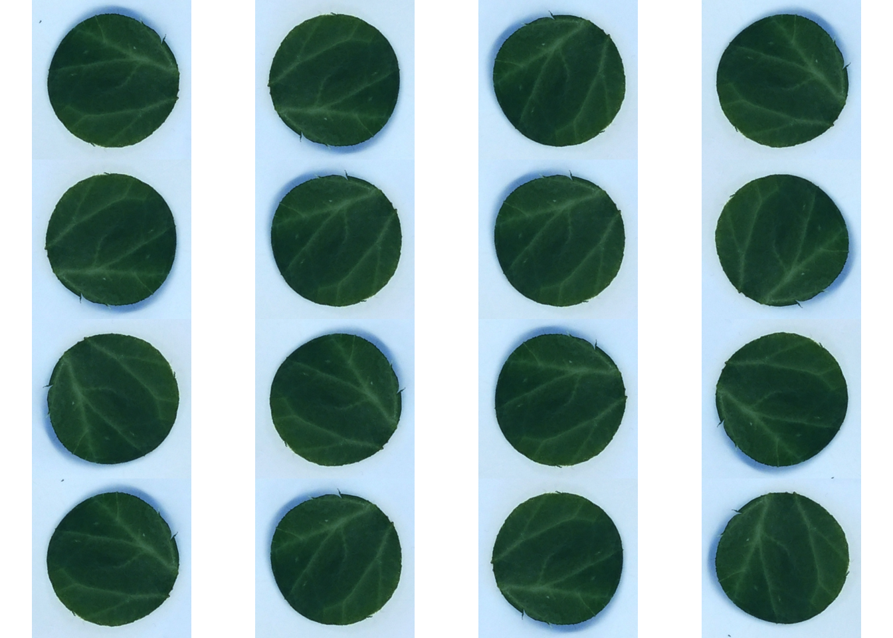

型に厳密でないRに慣れたせいではまったメモ
画像を回転・移動させて画像増殖する機械学習の定石をとるにあたり、keras.preprocessing.imageというPythonモジュールが便利そう (参照)。 Rから呼べればなお幸せなのでreticulateで呼び出す。
library(reticulate, quietly = TRUE)
library(imager)
reticulate::use_virtualenv("r-tensorflow")
kpi <- reticulate::import("keras.preprocessing.image")
names(kpi)
names(kpi$image)## [1] "absolute_import" "apply_affine_transform"
## [3] "apply_brightness_shift" "apply_channel_shift"
## [5] "array_to_img" "DirectoryIterator"
## [7] "division" "image"
## [9] "ImageDataGenerator" "img_to_array"
## [11] "Iterator" "load_img"
## [13] "NumpyArrayIterator" "print_function"
## [15] "random_brightness" "random_channel_shift"
## [17] "random_rotation" "random_shear"
## [19] "random_shift" "random_zoom"
## [21] "save_img"
## [1] "absolute_import" "apply_affine_transform"
## [3] "apply_brightness_shift" "apply_channel_shift"
## [5] "array_to_img" "backend"
## [7] "DirectoryIterator" "division"
## [9] "flip_axis" "get_keras_submodule"
## [11] "ImageDataGenerator" "ImageEnhance"
## [13] "img_to_array" "Iterator"
## [15] "keras_utils" "list_pictures"
## [17] "load_img" "multiprocessing"
## [19] "np" "NumpyArrayIterator"
## [21] "os" "partial"
## [23] "pil_image" "print_function"
## [25] "random_brightness" "random_channel_shift"
## [27] "random_rotation" "random_shear"
## [29] "random_shift" "random_zoom"
## [31] "range" "re"
## [33] "save_img" "scipy"
## [35] "threading" "transform_matrix_offset_center"
## [37] "warnings"パッケージが階層っぽく管理されている。 ほしいのはkpi$image$random_rotation。
下準備
# ライセンスフリーの画像をローカル一時フォルダに保存
temp_file <- tempfile()
img_url <- "https://cdn.pixabay.com/photo/2012/04/13/00/19/copyright-free-31208_640.png"
download.file(img_url, destfile = temp_file, quiet = TRUE)
# 画像を読み込む
(img_raw <- kpi$load_img(temp_file))
# 画像をRでも扱えるarrayに変換
img_raw %<>% kpi$img_to_array()
img_raw %>% dim
img_raw[1:3, 1:3, 1]
img <-
img_raw %>%
aperm(perm = c(2, 1, 3)) %>% # 画像が転地状態になるので、１−２次元目を入れ替え
`*`(1/255)
img %>%
as.cimg %>%
plot(axes = FALSE)## <PIL.Image.Image image mode=RGB size=585x640 at 0x123294AD0>
## [1] 640 585 3
## [,1] [,2] [,3]
## [1,] 255 255 255
## [2,] 255 255 255
## [3,] 255 255 255回転
サンプル画像に対してランダム回転処理を試す。 とりあえずでやってみると、回転されずに歪む。
img_rot <-
img %>%
kpi$random_rotation(rg = 360) %>% # rg: ランダム回転の許容角度 (degree)
as.cimg
plot(img_rot, axes = FALSE)random_rotationの回転のaxisはデフォルトでは変なことになっているので明示的に指定しないとダメ という記事を見て、解決したかと思えば今度はエラー。
img_rot <-
img %>%
kpi$random_rotation(rg = 360, row_axis = 0, col_axis = 1, channel_axis = 2) %>%
as.cimg
#> Error in py_call_impl(callable, dots$args, dots$keywords) :
#> TypeError: integer argument expected, got floatRからPythonへの変換中に型変換でも起こっているのかと思っていじったり、 R-Python間でのarray扱いの違い が原因かと思っていじったりしたが、結局はarrayのインデックスをinteger型に指定してPythonに送る必要があるだけだった。 以下の通り、row_axisほかを1Lで送ればいい。
img_rot <-
img %>%
kpi$random_rotation(rg = 360, row_axis = 0L, col_axis = 1L, channel_axis = 2L) %>%
as.cimg
plot(img_rot, axes = FALSE)ランダムに回転角度を決めるので、実行するたびに結果が変わる。 画像端に回転処理で見切れた部分が延長されて表示されるので、ランダム回転 → 余白をcropping、が必要そう。 croppingで取り除く領域のサイズは、45°回転した場合に最大で元画像の\(1-1/\sqrt2 \simeq 0.293\)なので、3割増で画像を切り出ししておくといい。
# rotate
img_rot <-
img %>%
kpi$random_rotation(rg = 360, row_axis = 0L, col_axis = 1L, channel_axis = 2L)
# cropping
dims <- dim(img)
cnt <- round(dims[1:2]/2) # center x-y px
frm <- round(dims[1:2] / sqrt(8)) # x-y px from center
img_crop <-
img_rot[(cnt[1]-frm[1]):(cnt[1]+frm[1]), (cnt[2]-frm[2]):(cnt[2]+frm[2]),]
par(mfrow=c(1, 3), mar = c(0, 0, 0, 0))
img %>%
as.cimg %>%
plot(axes = FALSE)
img_rot %>%
as.cimg %>%
plot(axes = FALSE)
img_crop %>%
as.cimg %>%
plot(axes = FALSE)関数化して葉片をランダムに回転させる。
# 関数科
random_rotate <-
function(img){
library(reticulate, quietly = TRUE)
reticulate::use_virtualenv("r-tensorflow")
kpi <- import("keras.preprocessing.image")
dims <- dim(img)
if(length(dims) == 2){
dim(img) <- c(dims, 1)
}
rot <-
img %>%
kpi$random_rotation(rg = 360, row_axis = 0L, col_axis = 1L, channel_axis = 2L)
cnt <- round(dims[1:2]/2) # center x-y px
frm <- round(dims[1:2] / sqrt(8)) # x-y px from center
rot[(cnt[1]-frm[1]):(cnt[1]+frm[1]), (cnt[2]-frm[2]):(cnt[2]+frm[2]),] %>%
return()
}
# データ読み込み
leaf_disc <-
"~/Dropbox/2018/ANU/disc_images/P04_id01_2.jpg" %>%
load.image() %>%
as.array %>%
.[,,1,]
# plot
par(mfrow = c(4, 4), mar = c(0, 0, 0, 0))
for(i in 1:16){
leaf_disc %>%
random_rotate %>%
as.cimg %>%
plot(axes = FALSE)
}
その他
型曖昧で危険といえばコレ
# NG
factor(c("1", "1.1", "0.9")) %>% as.numeric
# OK
factor(c("1", "1.1", "0.9")) %>% as.character %>% as.numeric## [1] 2 3 1
## [1] 1.0 1.1 0.9References
Session Info
devtools::session_info()## setting value
## version R version 3.5.0 (2018-04-23)
## system x86_64, darwin15.6.0
## ui X11
## language (EN)
## collate en_US.UTF-8
## tz Australia/Sydney
## date 2018-09-01
##
## package * version date source
## assertthat 0.2.0 2017-04-11 CRAN (R 3.5.0)
## backports 1.1.2 2017-12-13 CRAN (R 3.5.0)
## base * 3.5.0 2018-04-24 local
## bindr 0.1.1 2018-03-13 CRAN (R 3.5.0)
## bindrcpp 0.2.2 2018-03-29 CRAN (R 3.5.0)
## blogdown 0.6 2018-04-18 CRAN (R 3.5.0)
## bmp 0.3 2017-09-11 CRAN (R 3.5.0)
## bookdown 0.7 2018-02-18 CRAN (R 3.5.0)
## broom * 0.4.4.9000 2018-06-21 Github (tidyverse/broom@2721de4)
## cellranger 1.1.0 2016-07-27 CRAN (R 3.5.0)
## cli 1.0.0 2017-11-05 CRAN (R 3.5.0)
## colorspace 1.3-2 2016-12-14 CRAN (R 3.5.0)
## compiler 3.5.0 2018-04-24 local
## crayon 1.3.4 2017-09-16 CRAN (R 3.5.0)
## datasets * 3.5.0 2018-04-24 local
## devtools * 1.13.6 2018-06-27 CRAN (R 3.5.0)
## digest 0.6.15 2018-01-28 CRAN (R 3.5.0)
## dplyr * 0.7.6 2018-06-29 cran (@0.7.6)
## evaluate 0.10.1 2017-06-24 CRAN (R 3.5.0)
## forcats * 0.3.0 2018-02-19 CRAN (R 3.5.0)
## ggplot2 * 3.0.0 2018-07-03 CRAN (R 3.5.0)
## glue 1.3.0 2018-07-17 cran (@1.3.0)
## graphics * 3.5.0 2018-04-24 local
## grDevices * 3.5.0 2018-04-24 local
## grid 3.5.0 2018-04-24 local
## gtable 0.2.0 2016-02-26 CRAN (R 3.5.0)
## haven 1.1.1 2018-01-18 CRAN (R 3.5.0)
## hms 0.4.2 2018-03-10 CRAN (R 3.5.0)
## htmltools 0.3.6 2017-04-28 CRAN (R 3.5.0)
## httr 1.3.1 2017-08-20 CRAN (R 3.5.0)
## imager * 0.40.2 2017-04-24 CRAN (R 3.5.0)
## jpeg 0.1-8 2014-01-23 CRAN (R 3.5.0)
## jsonlite 1.5 2017-06-01 CRAN (R 3.5.0)
## knitr * 1.20 2018-02-20 CRAN (R 3.5.0)
## lattice 0.20-35 2017-03-25 CRAN (R 3.5.0)
## lazyeval 0.2.1 2017-10-29 CRAN (R 3.5.0)
## lubridate * 1.7.4 2018-04-11 CRAN (R 3.5.0)
## magrittr * 1.5 2014-11-22 CRAN (R 3.5.0)
## MASS * 7.3-49 2018-02-23 CRAN (R 3.5.0)
## Matrix 1.2-14 2018-04-09 CRAN (R 3.5.0)
## memoise 1.1.0 2017-04-21 CRAN (R 3.5.0)
## methods * 3.5.0 2018-04-24 local
## modelr 0.1.2 2018-05-11 cran (@0.1.2)
## munsell 0.4.3 2016-02-13 CRAN (R 3.5.0)
## nlme 3.1-137 2018-04-07 CRAN (R 3.5.0)
## pillar 1.2.3 2018-05-25 cran (@1.2.3)
## pkgconfig 2.0.1 2017-03-21 CRAN (R 3.5.0)
## plyr * 1.8.4 2016-06-08 CRAN (R 3.5.0)
## png 0.1-7 2013-12-03 CRAN (R 3.5.0)
## purrr * 0.2.5 2018-05-29 CRAN (R 3.5.0)
## R6 2.2.2 2017-06-17 CRAN (R 3.5.0)
## Rcpp 0.12.18 2018-07-23 cran (@0.12.18)
## readbitmap 0.1-4 2014-09-05 CRAN (R 3.5.0)
## readr * 1.1.1 2017-05-16 CRAN (R 3.5.0)
## readxl 1.1.0 2018-04-20 CRAN (R 3.5.0)
## reshape2 1.4.3 2017-12-11 CRAN (R 3.5.0)
## reticulate * 1.9.0.9003 2018-08-03 Github (rstudio/reticulate@b01b7c9)
## rlang 0.2.1 2018-05-30 cran (@0.2.1)
## rmarkdown 1.10 2018-06-11 cran (@1.10)
## rprojroot 1.3-2 2018-01-03 CRAN (R 3.5.0)
## rstudioapi 0.7 2017-09-07 CRAN (R 3.5.0)
## rvest 0.3.2 2016-06-17 CRAN (R 3.5.0)
## scales 0.5.0 2017-08-24 CRAN (R 3.5.0)
## stats * 3.5.0 2018-04-24 local
## stringi 1.2.3 2018-06-12 cran (@1.2.3)
## stringr * 1.3.1 2018-05-10 cran (@1.3.1)
## tibble * 1.4.2 2018-01-22 CRAN (R 3.5.0)
## tidyr * 0.8.1 2018-05-18 cran (@0.8.1)
## tidyselect 0.2.4 2018-02-26 CRAN (R 3.5.0)
## tidyverse * 1.2.1 2017-11-14 CRAN (R 3.5.0)
## tools 3.5.0 2018-04-24 local
## utils * 3.5.0 2018-04-24 local
## withr 2.1.2 2018-03-15 CRAN (R 3.5.0)
## xfun 0.1 2018-01-22 CRAN (R 3.5.0)
## xml2 1.2.0 2018-01-24 CRAN (R 3.5.0)
## yaml 2.2.0 2018-07-25 cran (@2.2.0)